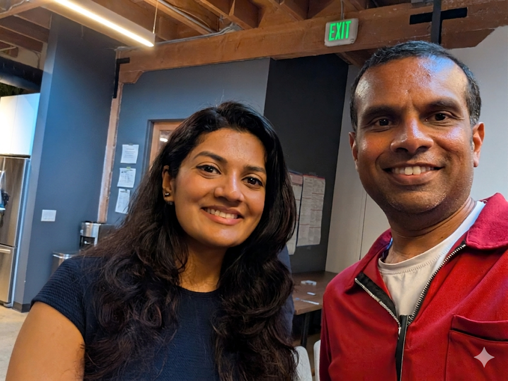
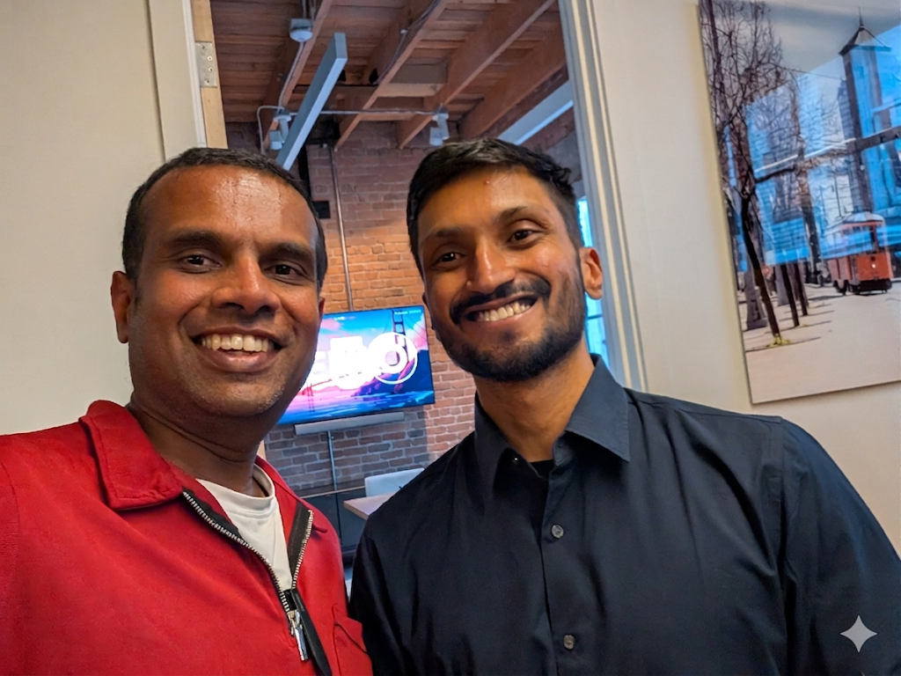

Hybrid Search Debates, Meeting the Cohort, and AI Dev Momentum
Published on May 6, 2026
I recently attended a high-energy AI meetup in the SF Bay Area at the Menlo Ventures office in SoMa, co-hosted by Pinecone and The Gen Academy. There is something unique about the builder culture here—no fluff, just real people actively trying to solve problems with AI.
The Cohort: The absolute best part of the night was meeting my upcoming batch cohort—Nandita Noojibail, Khushboo Vatsal Desai, and Ramya Nidadavolu—in person. We'll be tackling the Mastering Agentic AI coursework together soon, and connecting face-to-face before we dive in was unbeatable.
Personal Highlight: I also managed to catch up with Aishwarya Srinivasan and Arvind Narayanamurthy! They are the creators of the certification I'm taking, and it was fantastic to connect and draw on their extensive engineering experience in person.


Post-Session Deep Dives: Hybrid Search & Vector DBs
During the live demos, we got a great look at Pinecone Nexus, Pinecone Assistant, and their new Marketplace. What really caught my attention was their implementation of full-text search right inside the vector database.
This sparked some really fascinating debates about the reality of modern retrieval architecture. Here are the core questions I brought up with the panel and the team:
Balancing Precision & Semantics
Open Panel Discussion
"When adding full-text search capabilities to a vector database, what are the main engineering challenges in balancing exact keyword precision with semantic retrieval? How do you architect the system so that tuning one doesn't inadvertently degrade the performance of the other?"
The Lifespan of Hybrid Search
Discussed offline with Arjun Patel
"Do you see hybrid search as a long-term, permanent architecture for production systems, or is it just a transitional phase we are living in right now until embedding models get sophisticated enough to replace traditional full-text search entirely?"
Action Item: Building MCP Servers (AI Dev 26 Momentum)
While the meetup was great for networking and high-level debates, my actual engineering focus this week has been carrying over momentum from last week's AI Dev 26 conference.
Based directly on what I learned there, I've spent the last few days building out multiple Model Context Protocol (MCP) servers. I was able to take it from a basic "Hello World" proof-of-concept all the way to solving actual, day-to-day work problems we face. It's a massive shift in how we standardize tool access for our models. (Note: I'll be releasing a dedicated blog post walking through my technical learnings on this very soon!)